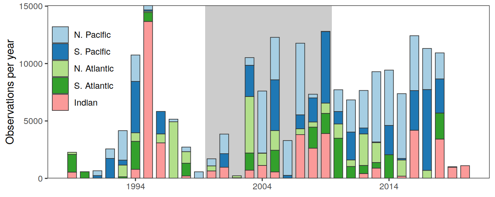
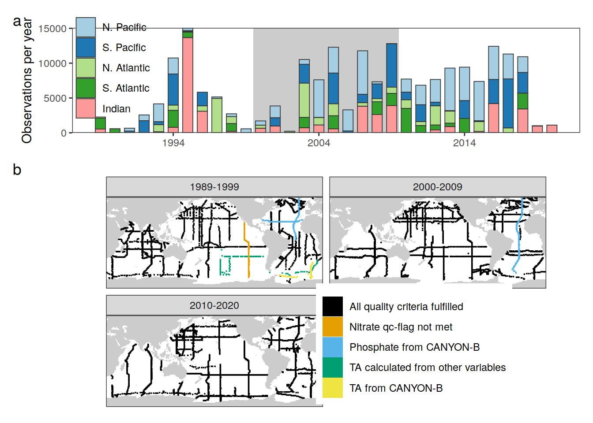
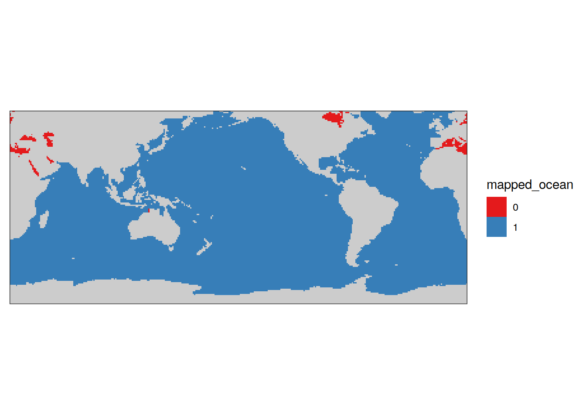

Basics
Jens Daniel Müller
17 April, 2023
Last updated: 2023-04-17
Checks: 7 0
Knit directory:
emlr_obs_analysis/analysis/
This reproducible R Markdown analysis was created with workflowr (version 1.7.0). The Checks tab describes the reproducibility checks that were applied when the results were created. The Past versions tab lists the development history.
Great! Since the R Markdown file has been committed to the Git repository, you know the exact version of the code that produced these results.
Great job! The global environment was empty. Objects defined in the global environment can affect the analysis in your R Markdown file in unknown ways. For reproduciblity it’s best to always run the code in an empty environment.
The command set.seed(20210412) was run prior to running
the code in the R Markdown file. Setting a seed ensures that any results
that rely on randomness, e.g. subsampling or permutations, are
reproducible.
Great job! Recording the operating system, R version, and package versions is critical for reproducibility.
Nice! There were no cached chunks for this analysis, so you can be confident that you successfully produced the results during this run.
Great job! Using relative paths to the files within your workflowr project makes it easier to run your code on other machines.
Great! You are using Git for version control. Tracking code development and connecting the code version to the results is critical for reproducibility.
The results in this page were generated with repository version ba396c9. See the Past versions tab to see a history of the changes made to the R Markdown and HTML files.
Note that you need to be careful to ensure that all relevant files for
the analysis have been committed to Git prior to generating the results
(you can use wflow_publish or
wflow_git_commit). workflowr only checks the R Markdown
file, but you know if there are other scripts or data files that it
depends on. Below is the status of the Git repository when the results
were generated:
Ignored files:
Ignored: .Rhistory
Ignored: .Rproj.user/
Ignored: data/
Ignored: output/other/
Ignored: output/presentation/
Ignored: output/publication/
Untracked files:
Untracked: code/RScript_Jens_globalMap.R
Untracked: code/choky-barb_reprex.R
Untracked: code/choky-barb_reprex.md
Untracked: code/choky-barb_reprex_files/
Untracked: code/raster_dataframe.R
Untracked: code/results_publication_backup_incl_ensemble_uncertainty_20221111.Rmd
Untracked: code/tidyterra_spatRaster.R
Untracked: code/write_ocean_raster_netcdf.R
Untracked: ok-coqui_reprex_files/
Unstaged changes:
Modified: analysis/G19_column_inventories.Rmd
Deleted: analysis/MLR_target_budgets.Rmd
Deleted: analysis/MLR_target_column_inventories.Rmd
Deleted: analysis/MLR_target_zonal_sections.Rmd
Modified: analysis/_site.yml
Modified: analysis/results_publication.Rmd
Modified: code/Workflowr_project_managment.R
Note that any generated files, e.g. HTML, png, CSS, etc., are not included in this status report because it is ok for generated content to have uncommitted changes.
These are the previous versions of the repository in which changes were
made to the R Markdown (analysis/basics.Rmd) and HTML
(docs/basics.html) files. If you’ve configured a remote Git
repository (see ?wflow_git_remote), click on the hyperlinks
in the table below to view the files as they were in that past version.
| File | Version | Author | Date | Message |
|---|---|---|---|---|
| Rmd | ba396c9 | jens-daniel-mueller | 2023-04-17 | tag levels small letters |
| html | 66bb18a | jens-daniel-mueller | 2023-03-31 | Build site. |
| Rmd | 98b3393 | jens-daniel-mueller | 2023-03-31 | included global section map |
| html | 5650987 | jens-daniel-mueller | 2023-01-05 | Build site. |
| Rmd | 2d607a7 | jens-daniel-mueller | 2023-01-05 | converted all maps to robinson projection |
| html | fddad0b | jens-daniel-mueller | 2022-11-30 | Build site. |
| html | 57d1a9b | jens-daniel-mueller | 2022-11-17 | Build site. |
| html | 375300e | jens-daniel-mueller | 2022-11-14 | Build site. |
| html | cc337dd | jens-daniel-mueller | 2022-11-11 | Build site. |
| html | ec60f68 | jens-daniel-mueller | 2022-11-07 | Build site. |
| Rmd | 820fff8 | jens-daniel-mueller | 2022-11-06 | rebuild website after internal implementing review round 1 |
| html | 5d06b07 | jens-daniel-mueller | 2022-10-07 | Build site. |
| Rmd | a79155d | jens-daniel-mueller | 2022-10-07 | revised color scheme for obs coverage map |
| html | 9d2929c | jens-daniel-mueller | 2022-09-09 | Build site. |
| Rmd | bd6c492 | jens-daniel-mueller | 2022-09-09 | adjustment counts |
| html | 7184b6b | jens-daniel-mueller | 2022-09-09 | Build site. |
| Rmd | 4e4b934 | jens-daniel-mueller | 2022-09-09 | data coverage time series updated |
| html | 7cf954e | jens-daniel-mueller | 2022-09-08 | Build site. |
| Rmd | 6f53c28 | jens-daniel-mueller | 2022-09-08 | column inventory uncertainty stippling added |
| html | 4786cae | jens-daniel-mueller | 2022-08-29 | Build site. |
| Rmd | 0c7719a | jens-daniel-mueller | 2022-08-29 | data coverage time series updated |
| html | e99640e | jens-daniel-mueller | 2022-07-29 | Build site. |
| html | 531ecfd | jens-daniel-mueller | 2022-07-19 | Build site. |
| Rmd | 97dcf07 | jens-daniel-mueller | 2022-07-19 | changed color scales |
| html | 08c00b4 | jens-daniel-mueller | 2022-07-16 | Build site. |
| html | 692c937 | jens-daniel-mueller | 2022-07-16 | Build site. |
| html | b44c72a | jens-daniel-mueller | 2022-07-03 | Build site. |
| html | 6e173bf | jens-daniel-mueller | 2022-06-30 | updated regional budget plots |
| html | f09080e | jens-daniel-mueller | 2022-06-28 | Build site. |
| Rmd | d457610 | jens-daniel-mueller | 2022-06-28 | save figures for publication |
| html | a13a7cf | jens-daniel-mueller | 2022-06-28 | Build site. |
| html | b52b159 | jens-daniel-mueller | 2022-06-27 | Build site. |
| html | 09b0780 | jens-daniel-mueller | 2022-05-24 | Build site. |
| html | 25da2fb | jens-daniel-mueller | 2022-05-24 | Build site. |
| Rmd | aba19e4 | jens-daniel-mueller | 2022-05-24 | rebuild with multi model assesment |
| html | e09320d | jens-daniel-mueller | 2022-04-12 | Build site. |
| html | 8dca96a | jens-daniel-mueller | 2022-04-12 | Build site. |
| html | acad2e2 | jens-daniel-mueller | 2022-04-09 | Build site. |
| html | c3a6238 | jens-daniel-mueller | 2022-03-08 | Build site. |
| html | 565224d | jens-daniel-mueller | 2022-02-17 | Build site. |
| Rmd | 33422e3 | jens-daniel-mueller | 2022-02-17 | scaled budgets to global coverage |
| html | a246221 | jens-daniel-mueller | 2022-02-04 | Build site. |
| Rmd | 4874b3b | jens-daniel-mueller | 2022-02-04 | new coaverage map |
| html | d2191ad | jens-daniel-mueller | 2022-02-04 | Build site. |
| Rmd | 79a54fe | jens-daniel-mueller | 2022-02-04 | new coaverage map |
| html | accfd87 | jens-daniel-mueller | 2022-02-01 | Build site. |
| Rmd | afc3d83 | jens-daniel-mueller | 2022-02-01 | plot 5 basin map |
| html | de557de | jens-daniel-mueller | 2022-01-28 | Build site. |
| html | 9753eb8 | jens-daniel-mueller | 2022-01-26 | Build site. |
| html | f347cd7 | jens-daniel-mueller | 2022-01-18 | Build site. |
| Rmd | 86b711c | jens-daniel-mueller | 2022-01-18 | plot hemisphere budgets and publication results |
| html | 513630f | jens-daniel-mueller | 2022-01-18 | Build site. |
| html | d7dfc7c | jens-daniel-mueller | 2022-01-18 | Build site. |
| html | 269809e | jens-daniel-mueller | 2022-01-12 | Build site. |
| html | 1696b98 | jens-daniel-mueller | 2022-01-11 | Build site. |
| html | 570e738 | jens-daniel-mueller | 2022-01-10 | Build site. |
| Rmd | d3903e6 | jens-daniel-mueller | 2022-01-10 | rebuild with child docs |
| html | 7e0a36b | jens-daniel-mueller | 2021-11-21 | Build site. |
| html | e505a4b | jens-daniel-mueller | 2021-11-09 | Build site. |
| html | 18f801f | jens-daniel-mueller | 2021-11-03 | Build site. |
| Rmd | 0ff2960 | jens-daniel-mueller | 2021-11-03 | updated plots |
| html | e1743e7 | jens-daniel-mueller | 2021-11-03 | Build site. |
| Rmd | 2441237 | jens-daniel-mueller | 2021-11-03 | updated plots |
| html | f7c3da2 | jens-daniel-mueller | 2021-11-03 | Build site. |
| html | e534f51 | jens-daniel-mueller | 2021-11-02 | Build site. |
| html | 57cfc36 | jens-daniel-mueller | 2021-11-01 | Build site. |
| html | 4331a22 | jens-daniel-mueller | 2021-10-29 | Build site. |
| html | ae5ae64 | jens-daniel-mueller | 2021-10-26 | Build site. |
| html | 581baa0 | jens-daniel-mueller | 2021-10-07 | Build site. |
| html | a7af62f | jens-daniel-mueller | 2021-10-06 | Build site. |
| html | f9b4f93 | jens-daniel-mueller | 2021-10-05 | Build site. |
| html | ae93565 | jens-daniel-mueller | 2021-09-29 | Build site. |
| Rmd | c5eb521 | jens-daniel-mueller | 2021-09-29 | coverage maps added |
| html | 960d158 | jens-daniel-mueller | 2021-09-29 | Build site. |
| html | 0573621 | jens-daniel-mueller | 2021-09-29 | Build site. |
| Rmd | f5cf35e | jens-daniel-mueller | 2021-09-29 | rebuildt with vif results |
center <- -160
boundary <- center + 180
target_crs <- paste0("+proj=robin +over +lon_0=", center)
# target_crs <- paste0("+proj=eqearth +over +lon_0=", center)
# target_crs <- paste0("+proj=eqearth +lon_0=", center)
# target_crs <- paste0("+proj=igh_o +lon_0=", center)
worldmap <- ne_countries(scale = 'small',
type = 'map_units',
returnclass = 'sf')
worldmap <- worldmap %>% st_break_antimeridian(lon_0 = center)
worldmap_trans <- st_transform(worldmap, crs = target_crs)
ggplot() +
geom_sf(data = worldmap_trans)
fig.path you set was
ignored by workflowr.
coastline <- ne_coastline(scale = 'small', returnclass = "sf")
coastline <- st_break_antimeridian(coastline, lon_0 = 200)
coastline_trans <- st_transform(coastline, crs = target_crs)
# ggplot() +
# geom_sf(data = worldmap_trans, fill = "grey", col="grey") +
# geom_sf(data = coastline_trans)
bbox <- st_bbox(c(xmin = -180, xmax = 180, ymax = 65, ymin = -78), crs = st_crs(4326))
bbox <- st_as_sfc(bbox)
bbox_trans <- st_break_antimeridian(bbox, lon_0 = center)
bbox_graticules <- st_graticule(
x = bbox_trans,
crs = st_crs(bbox_trans),
datum = st_crs(bbox_trans),
lon = c(20, 20.001),
lat = c(-78,65),
ndiscr = 1e3,
margin = 0.001
)
bbox_graticules_trans <- st_transform(bbox_graticules, crs = target_crs)
rm(worldmap, coastline, bbox, bbox_trans)
# ggplot() +
# geom_sf(data = worldmap_trans, fill = "grey", col="grey") +
# geom_sf(data = coastline_trans) +
# geom_sf(data = bbox_graticules_trans)
lat_lim <- ext(bbox_graticules_trans)[c(3,4)]*1.002
lon_lim <- ext(bbox_graticules_trans)[c(1,2)]*1.005
# ggplot() +
# geom_sf(data = worldmap_trans, fill = "grey90", col = "grey90") +
# geom_sf(data = coastline_trans) +
# geom_sf(data = bbox_graticules_trans, linewidth = 1) +
# coord_sf(crs = target_crs,
# ylim = lat_lim,
# xlim = lon_lim,
# expand = FALSE) +
# theme(
# panel.border = element_blank(),
# axis.text = element_blank(),
# axis.ticks = element_blank()
# )
latitude_graticules <- st_graticule(
x = bbox_graticules,
crs = st_crs(bbox_graticules),
datum = st_crs(bbox_graticules),
lon = c(20, 20.001),
lat = c(-60,-30,0,30,60),
ndiscr = 1e3,
margin = 0.001
)
latitude_graticules_trans <- st_transform(latitude_graticules, crs = target_crs)
latitude_labels <- data.frame(lat_label = c("60°N","30°N","Eq.","30°S","60°S"),
lat = c(60,30,0,-30,-60)-4, lon = c(35)-c(0,2,4,2,0))
latitude_labels <- st_as_sf(x = latitude_labels,
coords = c("lon", "lat"),
crs = "+proj=longlat")
latitude_labels_trans <- st_transform(latitude_labels, crs = target_crs)
# ggplot() +
# geom_sf(data = worldmap_trans, fill = "grey", col = "grey") +
# geom_sf(data = coastline_trans) +
# geom_sf(data = bbox_graticules_trans) +
# geom_sf(data = latitude_graticules_trans,
# col = "grey60",
# linewidth = 0.2) +
# geom_sf_text(data = latitude_labels_trans,
# aes(label = lat_label),
# size = 3,
# col = "grey60")1 Read files
version_id_pattern <- "103"
# identify required version IDs
Version_IDs_1 <- list.files(path = "/nfs/kryo/work/jenmueller/emlr_cant/observations",
pattern = paste0("v_1", version_id_pattern))
Version_IDs_2 <- list.files(path = "/nfs/kryo/work/jenmueller/emlr_cant/observations",
pattern = paste0("v_2", version_id_pattern))
Version_IDs_3 <- list.files(path = "/nfs/kryo/work/jenmueller/emlr_cant/observations",
pattern = paste0("v_3", version_id_pattern))
Version_IDs <- c(Version_IDs_1, Version_IDs_2, Version_IDs_3)for (i_Version_IDs in Version_IDs) {
path_version_data <-
paste(path_observations,
i_Version_IDs,
"/data/",
sep = "")
params_local <-
read_rds(paste(path_version_data,
"params_local.rds",
sep = ""))
params_local <- bind_cols(
Version_ID = i_Version_IDs,
tref1 = params_local$tref1,
tref2 = params_local$tref2,
MLR_basins = params_local$MLR_basins
)
tref <- read_csv(paste(path_version_data,
"tref.csv",
sep = ""))
params_local <- params_local %>%
mutate(
median_year_1 = sort(tref$median_year)[1],
median_year_2 = sort(tref$median_year)[2],
duration = median_year_2 - median_year_1,
period = paste(median_year_1, "-", median_year_2)
)
if (exists("params_local_all_ensemble")) {
params_local_all_ensemble <- bind_rows(params_local_all_ensemble, params_local)
}
if (!exists("params_local_all_ensemble")) {
params_local_all_ensemble <- params_local
}
}
rm(params_local,
tref)
params_local_all_ensemble <- params_local_all_ensemble %>%
select(Version_ID, period, MLR_basins, tref1, tref2)
params_local_all_ensemble <-
params_local_all_ensemble %>%
mutate(
Version_ID_group = str_sub(Version_ID, 4, 4),
Version_ID_group = case_when(
Version_ID_group == "1" ~ "Bulk adjustment",
Version_ID_group == "c" ~ "Cruise adjustment",
Version_ID_group == "d" ~ "No adjustment",
Version_ID_group == "g" ~ "No gap filling",
Version_ID_group == "o" ~ "Reoccupation filter",
Version_ID_group == "e" ~ "Surface eMLR(C*)",
Version_ID_group == "n" ~ "C*(N)",
TRUE ~ Version_ID_group
)
)
params_local_all_ensemble <-
params_local_all_ensemble %>%
mutate(
MLR_basins = case_when(
MLR_basins == "AIP" ~ "3",
MLR_basins == "SO_AIP" ~ "3+SO",
MLR_basins == "SO_5" ~ "5+SO",
TRUE ~ MLR_basins
)
)
params_local_all <- params_local_all_ensemble %>%
filter(Version_ID %in% Version_IDs)1.1 Periods
two_decades <- unique(params_local_all_ensemble$period)[1:2]1.2 Observations coverage
for (i_Version_IDs in Version_IDs) {
# i_Version_IDs <- Version_IDs[1]
path_version_data <-
paste(path_observations,
i_Version_IDs,
"/data/",
sep = "")
# read cleaned GLODAP files
GLODAP <- read_csv(paste(
path_version_data,
"GLODAPv2.2020_clean.csv",
sep = ""
))
GLODAP <- GLODAP %>%
mutate(Version_ID = i_Version_IDs)
if (exists("GLODAP_all")) {
GLODAP_all <-
bind_rows(GLODAP_all, GLODAP)
}
if (!exists("GLODAP_all")) {
GLODAP_all <- GLODAP
}
# read cleaned GLODAP_flagging_stats files
GLODAP_flagging_stats <- read_csv(paste(
path_version_data,
"GLODAP_flagging_stats.csv",
sep = ""
))
GLODAP_flagging_stats <- GLODAP_flagging_stats %>%
mutate(Version_ID = i_Version_IDs)
if (exists("GLODAP_flagging_stats_all")) {
GLODAP_flagging_stats_all <-
bind_rows(GLODAP_flagging_stats_all, GLODAP_flagging_stats)
}
if (!exists("GLODAP_flagging_stats_all")) {
GLODAP_flagging_stats_all <- GLODAP_flagging_stats
}
# read cleaned GLODAP_adjustment_stats files
GLODAP_adjustment_stats <- read_csv(paste(
path_version_data,
"GLODAP_adjustment_stats.csv",
sep = ""
))
GLODAP_adjustment_stats <- GLODAP_adjustment_stats %>%
mutate(Version_ID = i_Version_IDs)
if (exists("GLODAP_adjustment_stats_all")) {
GLODAP_adjustment_stats_all <-
bind_rows(GLODAP_adjustment_stats_all, GLODAP_adjustment_stats)
}
if (!exists("GLODAP_adjustment_stats_all")) {
GLODAP_adjustment_stats_all <- GLODAP_adjustment_stats
}
# read cleaned GLODAP_CanyonB_filling_stats files
GLODAP_CanyonB_filling_stats <- read_csv(paste(
path_version_data,
"GLODAP_CanyonB_filling_stats.csv",
sep = ""
))
GLODAP_CanyonB_filling_stats <- GLODAP_CanyonB_filling_stats %>%
mutate(Version_ID = i_Version_IDs)
if (exists("GLODAP_CanyonB_filling_stats_all")) {
GLODAP_CanyonB_filling_stats_all <-
bind_rows(GLODAP_CanyonB_filling_stats_all, GLODAP_CanyonB_filling_stats)
}
if (!exists("GLODAP_CanyonB_filling_stats_all")) {
GLODAP_CanyonB_filling_stats_all <- GLODAP_CanyonB_filling_stats
}
}
rm(
GLODAP,
GLODAP_adjustment_stats,
GLODAP_CanyonB_filling_stats,
GLODAP_flagging_stats
)
GLODAP_all <- full_join(GLODAP_all,
params_local_all)
GLODAP_adjustment_stats_all <-
full_join(GLODAP_adjustment_stats_all,
params_local_all)
GLODAP_CanyonB_filling_stats_all <-
full_join(GLODAP_CanyonB_filling_stats_all,
params_local_all)
GLODAP_flagging_stats_all <- full_join(GLODAP_flagging_stats_all,
params_local_all)
GLODAP_expocodes <-
read_tsv(
paste(
"/nfs/kryo/work/updata/glodapv2_2021/",
"EXPOCODES.txt",
sep = ""
),
col_names = c("cruise", "cruise_expocode")
)
GLODAP_all <-
left_join(GLODAP_all, GLODAP_expocodes)
GLODAP_all <- GLODAP_all %>%
filter(period %in% two_decades) %>%
filter(!(period == "1994 - 2004" &
era == "2000-2009"))2 Adjustment stats
GLODAP_adjustment_stats_all %>%
group_by(era, period, adjustment, group) %>%
summarise(n = sum(n)) %>%
ungroup() %>%
filter(adjustment == "yes") %>%
filter(period %in% two_decades) %>%
filter(!(period == "1994 - 2004" &
era == "2000-2009")) %>%
summarise(n = sum(n))# A tibble: 1 × 1
n
<dbl>
1 50482GLODAP_flagging_stats_all %>%
filter(group == "filled")# A tibble: 4 × 10
group era n criterion Version_ID period MLR_b…¹ tref1 tref2 Versi…²
<chr> <chr> <dbl> <chr> <chr> <chr> <chr> <dbl> <dbl> <chr>
1 filled 1989-1999 2244 f_flag v_2103 1994 … 3 1994 2004 Bulk a…
2 filled 1989-1999 5365 qc_flag v_2103 1994 … 3 1994 2004 Bulk a…
3 filled 1989-1999 2244 f_flag v_3103 1994 … 3 1994 2014 Bulk a…
4 filled 1989-1999 5365 qc_flag v_3103 1994 … 3 1994 2014 Bulk a…
# … with abbreviated variable names ¹MLR_basins, ²Version_ID_groupGLODAP_CanyonB_filling_stats_all %>%
group_by(era, period, parameter, filling) %>%
summarise(n = sum(n)) %>%
ungroup() %>%
filter(filling == "filled") %>%
filter(period %in% two_decades) %>%
filter(!(period == "1994 - 2004" &
era == "2000-2009")) %>%
summarise(n = sum(n))# A tibble: 1 × 1
n
<dbl>
1 7305 # ggplot(aes(parameter, n, fill = filling)) +
# coord_flip() +
# geom_col() +
# facet_grid(era~period) +
# scale_fill_brewer(palette = "Dark2")GLODAP_preprocessed <-
read_csv(
paste(
path_preprocessing,
"GLODAPv2.2021_preprocessed.csv",
sep = ""
)
)# land sea mask
landseamask <-
read_csv(paste(path_files,
"land_sea_mask_WOA18.csv",
sep = ""))3 Time series histogram
time_histo <- GLODAP_preprocessed %>%
drop_na() %>%
mutate(version = if_else(cruise <1000, "Gruber et al. (2019)",
"New observations"),
version = if_else(cruise %in% c(1041, 1042), "Gruber et al. (2019)", version)) %>%
count(year, version)
GLODAP_preprocessed %>%
drop_na() %>%
mutate(version = if_else(cruise <1000, "Gruber et al. (2019)",
"New observations"),
version = if_else(cruise %in% c(1041, 1042), "Gruber et al. (2019)", version)) %>%
count(version)
p_time_histo_G19 <-
time_histo %>%
filter(version == "Gruber et al. (2019)") %>%
ggplot() +
geom_col(aes(year, n, fill = version),
col = "grey20") +
scale_fill_manual(values = c("grey70"),
name = "") +
scale_x_continuous(breaks = seq(1900, 2100, 5),
limits = c(1981, 2021)) +
scale_y_continuous(limits = c(0, max(time_histo$n) + 500)) +
coord_cartesian(expand = 0) +
labs(title = "Observations per year") +
theme_classic() +
theme(axis.title = element_blank())
p_time_histo_all <-
time_histo %>%
mutate(version = fct_rev(version)) %>%
ggplot() +
geom_col(aes(year, n, fill = version),
col = "grey20") +
scale_fill_manual(values = c("darkgoldenrod1", "grey70"),
name = "") +
scale_x_continuous(breaks = seq(1900, 2100, 5),
limits = c(1981, 2021)) +
scale_y_continuous(limits = c(0, max(time_histo$n) + 500)) +
coord_cartesian(expand = 0) +
labs(title = "Observations per year") +
theme_classic() +
theme(axis.title = element_blank())
p_time_histo_G19
p_time_histo_all
# ggsave(plot = p_time_histo_G19,
# path = here::here("output/publication"),
# filename = "time_histo_G19.png",
# height = 2,
# width = 10)
# ggsave(plot = p_time_histo_all,
# path = here::here("output/publication"),
# filename = "FigS_coverage_time_series.png",
# height = 4,
# width = 10)
rm(
p_time_histo_G19,
p_time_histo_all
)GLODAP_all <-
inner_join(GLODAP_all %>% select(-basin),
basinmask_05)
time_histo <- GLODAP_all %>%
count(year, basin) %>%
mutate(basin = fct_relevel(
basin,
"N. Pacific",
"S. Pacific",
"N. Atlantic",
"S. Atlantic",
"Indian"
))
p_time_histo_basin <-
time_histo %>%
ggplot() +
annotate("rect", xmin = 1999.5, xmax=2009.5,
ymin = 0, ymax = Inf,
fill = "grey80", col="transparent") +
geom_col(
aes(year, n, fill = basin),
col = "grey20",
# fill = "grey50",
linewidth = 0.3,
width = 0.7
) +
scale_fill_brewer(palette = "Paired") +
scale_x_continuous(breaks = seq(1994, 2014, 10)) +
scale_y_continuous(limits = c(0, NA), expand = c(0, 0)) +
labs(y = "Observations per year") +
# facet_grid(basin~.)+
theme(axis.title.x = element_blank(),
panel.grid.minor = element_blank(),
legend.title = element_blank(),
legend.position = c(0.08,0.65),
legend.background = element_rect(fill = "transparent"))
p_time_histo_basin
| Version | Author | Date |
|---|---|---|
| 5650987 | jens-daniel-mueller | 2023-01-05 |
| fddad0b | jens-daniel-mueller | 2022-11-30 |
| 7184b6b | jens-daniel-mueller | 2022-09-09 |
| 4786cae | jens-daniel-mueller | 2022-08-29 |
| 531ecfd | jens-daniel-mueller | 2022-07-19 |
| acad2e2 | jens-daniel-mueller | 2022-04-09 |
| d2191ad | jens-daniel-mueller | 2022-02-04 |
| 18f801f | jens-daniel-mueller | 2021-11-03 |
| e1743e7 | jens-daniel-mueller | 2021-11-03 |
# ggsave(plot = p_time_histo_basin,
# path = here::here("output/publication"),
# filename = "FigS_observations_coverage_time_series.png",
# height = 6,
# width = 7)
# rm(p_time_histo_basin)time_histo %>%
summarise(n = sum(n))# A tibble: 1 × 1
n
<int>
1 206836GLODAP_all %>%
count(era)# A tibble: 3 × 2
era n
<chr> <int>
1 1989-1999 50336
2 2000-2009 71398
3 2010-2020 851024 Coverage maps
4.1 Robinson
cruises_phosphate_gap_fill <-
c("33MW19930704",
"33RO20030604",
"33RO20050111",
"33RO19980123")
cruises_talk_gap_fill <-
c("06AQ19980328")
cruises_talk_calc <-
c("06MT19900123",
"316N19920502",
"316N19921006")
GLODAP_all_coverage <- GLODAP_all %>%
distinct(lat, lon, era, cruise_expocode) %>%
mutate(gap_filling = case_when(
cruise_expocode %in% cruises_phosphate_gap_fill ~ 1,
cruise_expocode %in% cruises_talk_gap_fill ~ 2,
cruise_expocode %in% cruises_talk_calc ~ 3,
cruise_expocode %in% "31DS19940126" ~ 4,
TRUE ~ 5
)) %>%
distinct(lat, lon, era, gap_filling)
GLODAP_all_coverage_raster <- rast(GLODAP_all_coverage %>%
relocate(lon, lat) %>%
pivot_wider(names_from = era,
values_from = gap_filling,
values_fn = ~first(.x)),
crs = "+proj=longlat")
GLODAP_all_coverage_raster <- project(GLODAP_all_coverage_raster, target_crs,
method = "near")
GLODAP_all_coverage_tibble <- GLODAP_all_coverage_raster %>%
as.data.frame(xy = TRUE, na.rm = FALSE) %>%
as_tibble() %>%
rename(lon = x, lat = y) %>%
pivot_longer(cols = -c("lon", "lat"),
names_to = "era",
values_to = "gap_filling") %>%
drop_na()
GLODAP_all_coverage_tibble <- GLODAP_all_coverage_tibble %>%
mutate(gap_filling = case_when(
gap_filling == 1 ~ "Phosphate from CANYON-B",
gap_filling == 2 ~ "TA from CANYON-B",
gap_filling == 3 ~ "TA calculated from other variables",
gap_filling == 4 ~ "Nitrate qc-flag not met",
TRUE ~ "All quality criteria fulfilled"
))
coverage_map <-
ggplot() +
geom_tile(
data = GLODAP_all_coverage_tibble %>%
filter(gap_filling == "All quality criteria fulfilled"),
aes(
x = lon,
y = lat,
height = 1.5e5,
width = 1.5e5,
fill = gap_filling
)
)+
geom_tile(
data = GLODAP_all_coverage_tibble %>%
filter(gap_filling != "All quality criteria fulfilled"),
aes(
x = lon,
y = lat,
height = 1.5e5,
width = 1.5e5,
fill = gap_filling
)
)+
geom_sf(data = worldmap_trans, fill = "grey90", col = "grey90") +
geom_sf(data = coastline_trans, linewidth = 0.3) +
geom_sf(data = bbox_graticules_trans, linewidth = 0.5) +
coord_sf(
crs = target_crs,
ylim = lat_lim,
xlim = lon_lim,
expand = FALSE
) +
facet_wrap( ~ era, ncol = 2) +
scale_color_okabeito(guide = "none") +
scale_fill_okabeito() +
theme_void() +
theme(legend.position = c(0.8,0.25),
legend.title = element_blank())
coverage_map
| Version | Author | Date |
|---|---|---|
| 5650987 | jens-daniel-mueller | 2023-01-05 |
wrap_plots(p_time_histo_basin,
coverage_map, ncol = 1) +
plot_layout(heights = c(1, 2)) +
plot_annotation(tag_levels = 'a')
| Version | Author | Date |
|---|---|---|
| 5650987 | jens-daniel-mueller | 2023-01-05 |
ggsave(
path = here::here("output/publication"),
filename = "Fig_observations_coverage.png",
height = 6,
width = 8,
dpi = 600
)4.2 Mercator
cruises_phosphate_gap_fill <-
c("33MW19930704",
"33RO20030604",
"33RO20050111",
"33RO19980123")
cruises_talk_gap_fill <-
c("06AQ19980328")
cruises_talk_calc <-
c("06MT19900123",
"316N19920502",
"316N19921006")
GLODAP_all_coverage <- GLODAP_all %>%
distinct(lat, lon, era, cruise_expocode) %>%
mutate(gap_filling = case_when(
cruise_expocode %in% cruises_phosphate_gap_fill ~ "Phosphate from CANYON-B",
cruise_expocode %in% cruises_talk_gap_fill ~ "TA from CANYON-B",
cruise_expocode %in% cruises_talk_calc ~ "TA calculated from other variables",
cruise_expocode %in% "31DS19940126" ~ "Nitrate qc-flag not met",
TRUE ~ "All quality criteria fulfilled"
)) %>%
distinct(lat, lon, era, gap_filling)
colour("bright")(7) blue red green yellow cyan purple grey
"#4477AA" "#EE6677" "#228833" "#CCBB44" "#66CCEE" "#AA3377" "#BBBBBB"
attr(,"missing")
[1] NAcoverage_map <- map +
geom_tile(data = GLODAP_all_coverage %>%
filter(gap_filling == "All quality criteria fulfilled"),
aes(lon, lat,
fill = gap_filling, col = gap_filling,
height = 2, width = 2)) +
geom_tile(data = GLODAP_all_coverage %>%
filter(gap_filling != "All quality criteria fulfilled"),
aes(lon, lat,
fill = gap_filling, col = gap_filling,
height = 2, width = 2)) +
facet_wrap( ~ era, ncol = 2) +
scale_color_okabeito(guide = "none") +
scale_fill_okabeito() +
theme(axis.text = element_blank(),
axis.ticks = element_blank(),
legend.position = c(0.7,0.3),
legend.title = element_blank())
wrap_plots(p_time_histo_basin,
coverage_map, ncol = 1) +
plot_layout(heights = c(1, 2)) +
plot_annotation(tag_levels = 'a')
| Version | Author | Date |
|---|---|---|
| 5650987 | jens-daniel-mueller | 2023-01-05 |
| fddad0b | jens-daniel-mueller | 2022-11-30 |
| ec60f68 | jens-daniel-mueller | 2022-11-07 |
| 5d06b07 | jens-daniel-mueller | 2022-10-07 |
| 7184b6b | jens-daniel-mueller | 2022-09-09 |
| acad2e2 | jens-daniel-mueller | 2022-04-09 |
| c3a6238 | jens-daniel-mueller | 2022-03-08 |
| d2191ad | jens-daniel-mueller | 2022-02-04 |
| e1743e7 | jens-daniel-mueller | 2021-11-03 |
| ae93565 | jens-daniel-mueller | 2021-09-29 |
rm(coverage_map,
GLODAP_all_coverage, GLODAP_expocodes,
GLODAP_grid_era_all)
rm(cruises_phosphate_gap_fill,
cruises_talk_gap_fill,
cruises_talk_calc)5 Basin maps
5.1 MLR basins
basinmask <- basinmask %>%
mutate(
MLR_basins = case_when(
MLR_basins == "AIP" ~ "3",
MLR_basins == "SO_AIP" ~ "3+SO",
MLR_basins == "SO_5" ~ "5+SO",
TRUE ~ MLR_basins
)
)
MLR_basins_in <- c("1", "2", "3", "5", "3+SO", "5+SO")
basinmask <- basinmask %>%
filter(MLR_basins %in% MLR_basins_in)
basinmask <- basinmask %>%
group_by(MLR_basins) %>%
mutate(basin = as.character(as.numeric(as.factor(basin)))) %>%
ungroup()
map +
geom_raster(data = basinmask,
aes(lon, lat, fill = basin)) +
scale_fill_muted(guide = "none") +
facet_wrap( ~ MLR_basins) +
theme(axis.text = element_blank(),
axis.ticks = element_blank())
| Version | Author | Date |
|---|---|---|
| fddad0b | jens-daniel-mueller | 2022-11-30 |
| ec60f68 | jens-daniel-mueller | 2022-11-07 |
| 531ecfd | jens-daniel-mueller | 2022-07-19 |
| b52b159 | jens-daniel-mueller | 2022-06-27 |
| 09b0780 | jens-daniel-mueller | 2022-05-24 |
| acad2e2 | jens-daniel-mueller | 2022-04-09 |
| c3a6238 | jens-daniel-mueller | 2022-03-08 |
| d2191ad | jens-daniel-mueller | 2022-02-04 |
basinmask_robin <- basinmask %>%
# mutate(basin = as.numeric(basin)) %>%
select(-basin_AIP)
basinmask_robin %>% distinct(basin) %>% pull()[1] "1" "2" "5" "4" "3" "8" "6" "7"basinmask_robin_raster <- rast(basinmask_robin %>%
relocate(lon, lat) %>%
pivot_wider(names_from = MLR_basins,
values_from = basin),
crs = "+proj=longlat")
basinmask_robin_raster <- project(basinmask_robin_raster, target_crs, method = "near")
basinmask_robin_tibble <- basinmask_robin_raster %>%
as.data.frame(xy = TRUE, na.rm = FALSE) %>%
as_tibble() %>%
rename(lon = x, lat = y) %>%
pivot_longer(cols = -c("lon", "lat"),
names_to = "MLR_basins",
values_to = "basin") %>%
drop_na() %>%
mutate(basin = as.character(basin))
basin_maps <-
ggplot() +
geom_raster(
data = basinmask_robin_tibble,
aes(
x = lon,
y = lat,
fill = basin
)
) +
geom_sf(data = worldmap_trans, fill = "grey90", col = "grey90") +
geom_sf(data = coastline_trans, linewidth = 0.3) +
geom_sf(data = bbox_graticules_trans, linewidth = 0.5) +
coord_sf(
crs = target_crs,
ylim = lat_lim,
xlim = lon_lim,
expand = FALSE
) +
facet_wrap( ~ MLR_basins, ncol = 3) +
scale_fill_okabeito(guide = "none", reverse = TRUE) +
theme(
axis.title = element_blank(),
axis.text = element_blank(),
axis.ticks = element_blank(),
panel.border = element_rect(colour = "transparent"),
strip.background = element_blank()
)
basin_maps
# ggsave(plot = basin_maps,
# path = here::here("output/publication"),
# filename = "FigS_basin_masks.png",
# height = 3,
# width = 8,
# dpi = 600)# prepare section basin files
section_global_coordinates_basin_raster <-
rast(
section_global_coordinates_basin %>%
mutate(
dist = 1,
band = case_when(band == "Southern" ~ "Southern\nOcean",
TRUE ~ band)
) %>%
pivot_wider(names_from = band,
values_from = dist),
crs = "+proj=longlat"
)
# center <- -160
# boundary <- center + 180
# target_crs <- paste0("+proj=robin +over +lon_0=", center)
section_global_coordinates_basin_raster <-
project(section_global_coordinates_basin_raster, target_crs, method = "near")
section_global_coordinates_basin_tibble <-
section_global_coordinates_basin_raster %>%
as.data.frame(xy = TRUE, na.rm = FALSE) %>%
as_tibble() %>%
rename(lon = x, lat = y) %>%
pivot_longer(
cols = -c("lon", "lat"),
names_to = "band",
values_to = "coverage"
) %>%
drop_na() %>%
mutate(band = as.character(band))
# prepare section file
section_global_coordinates_raster <-
rast(section_global_coordinates,
crs = "+proj=longlat")
section_global_coordinates_raster <-
project(section_global_coordinates_raster, target_crs, method = "near")
section_global_coordinates_tibble <-
section_global_coordinates_raster %>%
as.data.frame(xy = TRUE, na.rm = FALSE) %>%
as_tibble() %>%
rename(lon = x, lat = y) %>%
drop_na()
section_global_coordinates_tibble <-
section_global_coordinates_tibble %>%
group_by(dist) %>%
summarise(lon = mean(lon),
lat = mean(lat)) %>%
ungroup() %>%
mutate(dist = cut(dist, seq(0,40,10),
labels = c("0-10", "10-20", "20-30", "30-40")))
global_section_map <-
ggplot() +
geom_raster(data = section_global_coordinates_basin_tibble %>%
filter(band == "Atlantic"),
aes(
x = lon,
y = lat,
fill = band,
alpha = 0.3
)) +
geom_raster(data = section_global_coordinates_basin_tibble %>%
filter(band == "Southern\nOcean"),
aes(
x = lon,
y = lat,
fill = band,
alpha = 0.3
)) +
geom_raster(data = section_global_coordinates_basin_tibble %>%
filter(band == "Pacific"),
aes(
x = lon,
y = lat,
fill = band,
alpha = 0.3
)) +
scale_fill_mediumcontrast(name = "Averaging\nareas") +
# scale_fill_grey() +
geom_path(
data = section_global_coordinates_tibble %>%
filter(lon > 0),
aes(x = lon,
y = lat,
color = dist),
linewidth = 1
) +
geom_path(
data = section_global_coordinates_tibble %>%
filter(lon < 0),
aes(x = lon,
y = lat,
color = dist),
linewidth = 1
) +
scale_color_grey(start = 0.7,end = 0, name = "Distance\nalong\nsection\n(1000 km)") +
geom_sf(data = worldmap_trans, fill = "grey90", col = "grey90") +
geom_sf(data = coastline_trans, linewidth = 0.3) +
geom_sf(data = latitude_graticules_trans,
col = "grey60",
linewidth = 0.2) +
geom_sf_text(data = latitude_labels_trans,
aes(label = lat_label),
size = 2,
col = "grey60")+
geom_sf(data = bbox_graticules_trans, linewidth = 0.3) +
coord_sf(
crs = target_crs,
ylim = lat_lim,
xlim = lon_lim,
expand = FALSE
) +
guides(fill = guide_legend(override.aes = list(alpha = 0.3)),
alpha = "none") +
theme(
axis.title = element_blank(),
axis.text = element_blank(),
axis.ticks = element_blank(),
panel.border = element_rect(colour = "transparent"),
strip.background = element_blank(),
panel.grid.major = element_blank(),
legend.direction = "vertical", legend.box = "horizontal"
)
design <- "AAAA
#BB#"
wrap_plots(A = basin_maps, B = global_section_map, design = design) +
plot_layout(heights = c(3, 2)) +
plot_annotation(tag_levels = 'a')
| Version | Author | Date |
|---|---|---|
| 66bb18a | jens-daniel-mueller | 2023-03-31 |
ggsave(path = here::here("output/publication"),
filename = "FigS_basin_masks.png",
height = 6,
width = 10,
dpi = 200)5.2 5 basins
MLR_basins_in <- c("5")
basinmask <- basinmask %>%
filter(MLR_basins %in% MLR_basins_in)
basinmask <- basinmask %>%
group_by(MLR_basins) %>%
mutate(basin = as.character(as.numeric(as.factor(basin)))) %>%
ungroup()
basinmask <- basinmask %>%
mutate(
basin = fct_recode(
basin,
"N. Pacific" = "3",
"S. Pacific" = "5",
"N. Atlantic" = "2",
"S. Atlantic" = "4",
"Indian" = "1"
)
)
basinmask <- basinmask %>%
mutate(basin = fct_relevel(
basin,
"N. Pacific",
"S. Pacific",
"N. Atlantic",
"S. Atlantic",
"Indian"
))
basin_maps <-
map +
geom_raster(data = basinmask,
aes(lon, lat, fill = basin)) +
scale_fill_bright(guide = "none") +
theme(axis.text = element_blank(),
axis.ticks = element_blank(),
legend.title = element_blank())
basin_maps
# ggsave(plot = basin_maps,
# path = here::here("output/publication"),
# filename = "FigS_basin_mask_5.png",
# height = 5,
# width = 10)5.3 Area scaling
mapped_ocean_mask <- full_join(
landseamask %>%
filter(region == "ocean") %>%
select(lon, lat),
basinmask %>%
select(lon, lat) %>%
mutate(mapped_ocean = "1")
) %>%
mutate(mapped_ocean = replace_na(mapped_ocean, "0"))
map +
geom_raster(data = mapped_ocean_mask,
aes(lon, lat, fill = mapped_ocean)) +
scale_fill_brewer(palette = "Set1") +
theme(
axis.text = element_blank(),
axis.ticks = element_blank()
)
mapped_ocean_mask %>%
mutate(surface_area = earth_surf(lat, lon)) %>%
group_by(mapped_ocean) %>%
summarise(surface_area = sum(surface_area)) %>%
ungroup() %>%
mutate(surface_area_ratio = surface_area / lead(surface_area))# A tibble: 2 × 3
mapped_ocean surface_area surface_area_ratio
<chr> <dbl> <dbl>
1 0 4.17e12 0.0125
2 1 3.34e14 NA 6 coverage maps all
GLODAP_era_grid <- GLODAP_all %>%
group_by(lon, lat, era) %>%
summarise(year_max = max(year),
year_min = min(year)) %>%
ungroup() %>%
drop_na()
coverage_map <-
map +
geom_tile(data = GLODAP_era_grid,
aes(lon, lat,
fill = "X")) +
scale_fill_brewer(palette = "Dark2", guide = "none") +
facet_wrap(~ era, ncol = 2) +
theme(axis.text = element_blank(),
axis.ticks = element_blank(),
panel.grid = element_blank())
coverage_map
| Version | Author | Date |
|---|---|---|
| 7184b6b | jens-daniel-mueller | 2022-09-09 |
sessionInfo()R version 4.2.2 (2022-10-31)
Platform: x86_64-pc-linux-gnu (64-bit)
Running under: openSUSE Leap 15.4
Matrix products: default
BLAS: /usr/local/R-4.2.2/lib64/R/lib/libRblas.so
LAPACK: /usr/local/R-4.2.2/lib64/R/lib/libRlapack.so
locale:
[1] LC_CTYPE=en_US.UTF-8 LC_NUMERIC=C
[3] LC_TIME=en_US.UTF-8 LC_COLLATE=en_US.UTF-8
[5] LC_MONETARY=en_US.UTF-8 LC_MESSAGES=en_US.UTF-8
[7] LC_PAPER=en_US.UTF-8 LC_NAME=C
[9] LC_ADDRESS=C LC_TELEPHONE=C
[11] LC_MEASUREMENT=en_US.UTF-8 LC_IDENTIFICATION=C
attached base packages:
[1] stats graphics grDevices utils datasets methods base
other attached packages:
[1] khroma_1.9.0 terra_1.6-41 sf_1.0-9
[4] rnaturalearth_0.1.0 geomtextpath_0.1.1 colorspace_2.0-3
[7] marelac_2.1.10 shape_1.4.6 ggforce_0.4.1
[10] metR_0.13.0 scico_1.3.1 patchwork_1.1.2
[13] collapse_1.8.9 forcats_0.5.2 stringr_1.4.1
[16] dplyr_1.1.1 purrr_0.3.5 readr_2.1.3
[19] tidyr_1.2.1 tibble_3.2.1 ggplot2_3.4.0
[22] tidyverse_1.3.2 workflowr_1.7.0
loaded via a namespace (and not attached):
[1] googledrive_2.0.0 ellipsis_0.3.2 class_7.3-20
[4] rprojroot_2.0.3 fs_1.5.2 rstudioapi_0.14
[7] proxy_0.4-27 farver_2.1.1 bit64_4.0.5
[10] fansi_1.0.3 lubridate_1.9.0 xml2_1.3.3
[13] codetools_0.2-18 cachem_1.0.6 knitr_1.41
[16] polyclip_1.10-4 jsonlite_1.8.3 gsw_1.1-1
[19] broom_1.0.1 dbplyr_2.2.1 compiler_4.2.2
[22] httr_1.4.4 backports_1.4.1 assertthat_0.2.1
[25] fastmap_1.1.0 gargle_1.2.1 cli_3.4.1
[28] later_1.3.0 tweenr_2.0.2 htmltools_0.5.3
[31] tools_4.2.2 rnaturalearthdata_0.1.0 gtable_0.3.1
[34] glue_1.6.2 Rcpp_1.0.9 cellranger_1.1.0
[37] jquerylib_0.1.4 vctrs_0.6.1 xfun_0.35
[40] ps_1.7.2 rvest_1.0.3 timechange_0.1.1
[43] lifecycle_1.0.3 googlesheets4_1.0.1 oce_1.7-10
[46] getPass_0.2-2 MASS_7.3-58.1 scales_1.2.1
[49] vroom_1.6.0 ragg_1.2.4 hms_1.1.2
[52] promises_1.2.0.1 parallel_4.2.2 RColorBrewer_1.1-3
[55] yaml_2.3.6 memoise_2.0.1 sass_0.4.4
[58] stringi_1.7.8 highr_0.9 e1071_1.7-12
[61] checkmate_2.1.0 rlang_1.1.0 pkgconfig_2.0.3
[64] systemfonts_1.0.4 evaluate_0.18 lattice_0.20-45
[67] SolveSAPHE_2.1.0 labeling_0.4.2 bit_4.0.5
[70] processx_3.8.0 tidyselect_1.2.0 here_1.0.1
[73] seacarb_3.3.1 magrittr_2.0.3 R6_2.5.1
[76] generics_0.1.3 DBI_1.1.3 pillar_1.8.1
[79] haven_2.5.1 whisker_0.4 withr_2.5.0
[82] units_0.8-0 sp_1.5-1 modelr_0.1.10
[85] crayon_1.5.2 KernSmooth_2.23-20 utf8_1.2.2
[88] tzdb_0.3.0 rmarkdown_2.18 grid_4.2.2
[91] readxl_1.4.1 data.table_1.14.6 callr_3.7.3
[94] git2r_0.30.1 reprex_2.0.2 digest_0.6.30
[97] classInt_0.4-8 httpuv_1.6.6 textshaping_0.3.6
[100] munsell_0.5.0 bslib_0.4.1